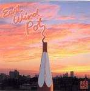

Home Artist links Label link

East Wind Pot - East Wind Pot
| Artist: | East Wind Pot |
| Title: | East Wind Pot |
| Label: | Poseidon/Musea PRF-032/FGBG 4636 |
| Length(s): | 49 minutes |
| Year(s) of release: | 2006 |
| Month of review: | [12/2006] |
Line up
Yuko Tsuchiya - keyboards
Daisuke Yamasaki - woodwinds
Yoshuyuki Sakurai - bass
Eiichi Tsuchiya - drums
Tracks
| 2) | An Argument With Illya Kuryakin Whom I Loved In My Childhood | 12.06
|
| 3) | Minotaurus | 6.48
|
| 4) | Blue Monday | 5.04
|
| 6) | April Dancer | 8.34
|
Summary
The music
Even though Dr Bloodmoney starts off a tad on the sticky side, it soon develops into a more passionate jazzprog track with nice melody and emotion, in which soprano sax (I think) takes the lead, but with an added warmth by the organ sounds. An Argument... has much more of a jazzy quality, with the piano taking the lead initially, but later with clarinet and vibraphone (or different type of phone). The stylistic difference between these two opening tracks is quite clear.
Minotaurus still has a jazzy side, but takes a far more melodic approach than An Argument. It has a bit of a sweet taste, with a seventies electric piano leading part of the way. As the track progresses the addition of extra instruments leads to a fuller sound, thus dragging the style towards progressive. This style that mixes jazzy, somewhat progressive and purely melodic styles appears the band's preferred approach, since it is continued into the following tracks. These have their moments, but are more for lovers of jazzrock oriented music, than for prog lovers.
Conclusion
This album has some good progressive sounding bits (particularly the final couple of minutes of the odd tracks). But the majority of the music, indeed, the band's basis is jazzrock (with occasional commercial tendencies). Therefore this album can be seen more as worthwhile for those into jazzrock, than for prog lovers, but doing quite nicely in its genre.
© Roberto Lambooy